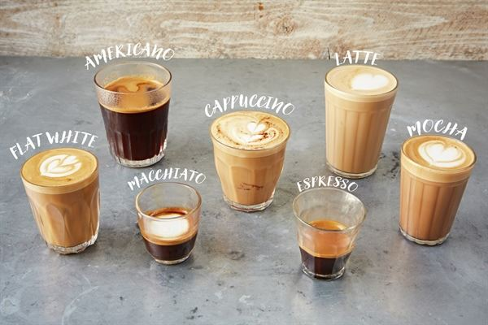

Koffie Espresso 2.6 / 3.5 Koffie, vol en puur van smaak. Ristretto 3.0 / 3.7 Extra sterke espresso. Americano 2.6 / 3.5 Espresso met heet water. Espresso Macchiato 2.9 / 3.8 Espresso met een beetje melkschuim. Cortado 2.8 / 3.7 Espresso met warme melk. Cappuccino 3.0 / 4.0 Espresso met warme melk en melkschuim Flat White 3.8 Dubbele espresso met warme melk en een laagje melkschuim Caffe Latte 3.2 / 4.2 Espresso met veel warme melk en een laagje melkschuim Latte Macchiato 4.0 Warme melk, espresso en veel melkschuim  Andere melk + 0.5 Sojamelk, amandelmelk, kokosmelk, havermelk. Thee Verse muntthee 3.1 Blend Tea 2.8 We hebben verschillende smaken, groene, zwarte, witte, rooibos en infusie thee. Verse gember-citroenthee 3.1 Chai Latte 3.8 Indian Chai thee met warme melk in een cafetière.